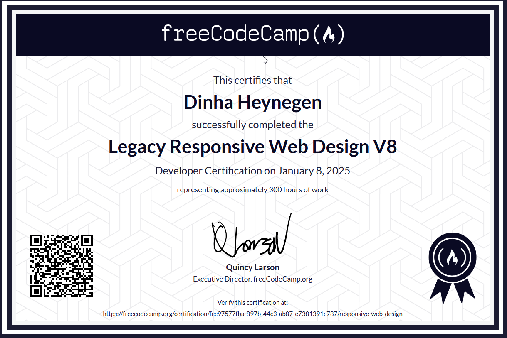

À propos de moi
Qui je suis
Je m'appelle Dinha HEYNEGEN, en deuxième année de BTS SIO option SISR à l'école INGETIS. Initialement en SLAM en première année, j'ai choisi de me réorienter vers SISR afin de me concentrer davantage sur les aspects systèmes et réseaux.
Ce que je vise
Attirée par les défis techniques et la résolution de problèmes complexes, je souhaite évoluer vers la cybersécurité offensive et devenir red teamer.
Qu'est-ce que le BTS SIO ?
Définition
Le BTS Services Informatiques aux Organisations (SIO) est un diplôme de niveau Bac+2 qui forme des techniciens capables de concevoir, déployer et maintenir des solutions informatiques adaptées aux besoins des entreprises. Il propose deux options : SISR (Solutions d'Infrastructure, Systèmes et Réseaux) et SLAM (Solutions Logicielles et Applications Métiers).
Options
-
SISRInfra ↓
Axée sur les réseaux, systèmes, sécurité et administration. Elle forme des profils capables d'installer et maintenir un système d'information.
-
SLAMDev ↓
Centrée sur le développement, les applications et les bases de données. Elle prépare à la création et la maintenance d'applications logicielles.
Mon parcours
INGETIS
Université de Poitiers
Lycée Maurice Ravel
Expériences professionnelles
Stage — Groupe Vital
→ Enrôlement et paramétrage des tablettes
→ Assemblage des contenants (bornes WIFI, tablettes, câbles)
→ Prise de rendez-vous téléphonique avec confirmation par mail
→ Inventaire du matériel récupéré
Alternance — TRUMPF
→ Support utilisateur à distance (TeamViewer, Bureau à distance)
→ Gestion des incidents et demandes via le logiciel de ticketing interne
→ Installation et configuration de logiciels et machines (plieuses, lasers, poinçonneuses...)
→ Traitement des demandes utilisateurs via hotline et priorisation des incidents
Veille technologique
La veille technologique consiste à surveiller régulièrement les évolutions du secteur informatique afin de rester à jour sur les nouvelles menaces, outils et pratiques.
Sources
-
IT-ConnectArticles infrastructure, réseaux et sécurité
-
CERT-FRAlertes et bulletins de sécurité
-
ZatazActualités cybersécurité française
-
Daily.devFlux personnalisé d'actualités IT
Exegol — un environnement dédié à la sécurité offensive
Exegol est un environnement de pentest basé sur Docker, créé par un Français. Il propose des conteneurs préconfigurés avec plus de 400 outils offensifs, plus légers et mieux cloisonnés qu'une VM Kali classique. Chaque mission dispose de son propre workspace isolé, idéal pour un pentest professionnel.
Alerte CERT-FR — Vulnérabilité critique dans Cisco Catalyst SD-WAN
Le CERT-FR a publié une alerte sur une faille critique dans Cisco Catalyst SD-WAN (CVE-2026-20127), activement exploitée, permettant de contourner la politique de sécurité réseau. Des correctifs existent mais certaines versions en fin de vie ne seront pas patchées — une migration est nécessaire. L'alerte liste aussi des indicateurs de compromission concrets à surveiller.
0APT — le faux ransomware qui noie le dark web
0APT est apparu sur le dark web en revendiquant 150+ entreprises piratées, mais les analyses ont révélé une supercherie : les fichiers ne contiennent que des données aléatoires imitant un chiffrement. Le vrai objectif est de provoquer la panique pour pousser les entreprises à payer pour être retirées de la liste — sans avoir jamais été piratées.
Zero Trust — pourquoi la CISA recommande d'abandonner les VPN traditionnels
La CISA recommande officiellement d'abandonner les VPN traditionnels au profit du Zero Trust : chaque accès est vérifié en continu selon l'identité, l'appareil et le contexte, sans confiance implicite. Les alternatives recommandées sont le SSE et le SASE, des architectures cloud-natives offrant un contrôle d'accès granulaire mieux adaptées aux environnements hybrides.
Certifications

Mes compétences
Tech
-
RéseauxSISR↓
VLAN, routage inter-VLAN, switches manageable, VPN OpenVPN, proxy Squid, Wireshark, analyse de trafic réseau.
-
SystèmesAdmin↓
Windows Server, Active Directory, GPO, Linux (Debian/Ubuntu), virtualisation VMware/VirtualBox.
-
SécuritéSec↓
pfSense, pare-feu, segmentation réseau, Wazuh, supervision et détection d'intrusion, simulation d'attaques MITM et ransomware, Kali Linux.
-
OutilsTools↓
Zabbix, GLPI, TeamViewer, Wireshark, Kali Linux, Bureau à distance.